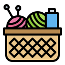

The Iron Loop
Looking for a crochet hook that’s sturdy yet comfortable? Meet your new best friend, The Iron Loop! Made from 100% recyclable steel, this hook is built to last—up to 20 years! It's crafted to sit comfortably in your hand, so you can crochet for hours without strain. Perfect for anything from quick gifts to bigger projects, The Iron Loop feels smooth and balanced, making it easy to get into a steady rhythm. It’s eco-friendly, and ready to be your go-to for all your creations.
The Natural Loop
Looking for a light, flexible hook? Meet the Natural Loop, your eco-friendly buddy! Made from sustainable bamboo, it’s super lightweight and feels smooth in your hand, letting you crochet for hours with ease. Bamboo adds just a little flex, so it’s gentle on your hands and wrists, even during those longer projects. Plus, it has a cozy, natural vibe you can't get from metal.
Cozy Twist Yarn
The best projects start with the best yarn. Our Cozy Twist is made from 100% merino wool, giving you that perfect blend of softness and warmth. It’s ideal for cozy sweaters, scarves, and anything else you want to make snuggly. Incredibly soft and comfortable, this yarn is perfect for adding a little extra warmth to your favourite projects.
| Product | Price |
|---|---|
| Iron Hook | $7 |
| Natural Hook | $8 |
| Cozy Twist Yarn | $10 |